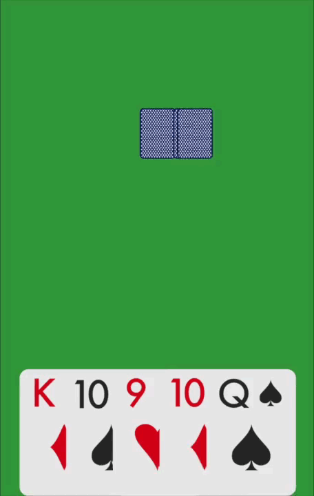

Background
What all can I really say about the background of a Euchre game? My family, friends and I all love Euchre and as there were no simple Euchre games on the app store, I decided to make my own.
Summary
As I was coming straight off of my Space Shooter project, the simple graphics and animations involved in a Euchre game were a great bonus. The best thing about this project, however, was the fact that 90% of the creation of the game was coding of the game system and round orders. Designing and implementing the classes involved in controlling the game, turns, and rounds was something that pushed me to really get a better mindset of proper class design.
